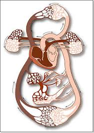

परिसंचरण तन्त्र

परिसंचरण तन्त्र बहुकोशिकीय प्राणियों के शरीर में तरल या संवहनीय संयोजी ऊतक पचे हुए पोषक पदार्थों, ऑक्सीजन, हार्मोन्स, कार्बन डाइऑक्साइड तथा अन्य उत्सर्जी पदार्थों के लिये यातायात का कार्य करता है। इस लेख में मानव शरीर से संबंधित उल्लेख है। जिस प्रकार हम बस या ट्रेन के द्वारा एक स्थान से दूसरे स्थान तक जाते हैं, उसी प्रकार इस कार्य के लिए शरीर में एक विस्तृत पाइप लाइन का तन्त्र होता है। इसे परिसंचरण तन्त्र कहते हैं। शरीर एवं वातावरण के बीच तथा शरीर के विभिन्न ऊतकों के बीच पदार्थों का निरन्तर रासायनिक आदान–प्रदान इसी तन्त्र के माध्यम से होता है।
कार्य
हमारे शरीर में परिसंचरण तन्त्र के प्रमुख कार्य निम्नलिखित हैं—
- खाद्य पदार्थों का परिवहन
परिसंचरण तन्त्र आहारनाल में पचे हुए खाद्य पदार्थों को शरीर की विभिन्न कोशिकाओं तक पहुँचाता है।
- ऑक्सीजन का परिवहन
यह तन्त्र ऑक्सीजन को फेफड़ों की वायु कूपिकाओं से ग्रहण करके शरीर की प्रत्येक कोशिका तक पहुँचाता है।
- कार्बन डाइ ऑक्साइड का परिवहन
कोशिकीय श्वसन में उत्पन्न CO2 को फेफड़ों तक परिवहन का कार्य परिसंचरण तन्त्र ही करता है।
- उत्सर्जी पदार्थों का परिवहन
ऊतकों व कोशिकाओं में उपापचय के फलस्वरूप बने उत्सर्जी या अपशिष्ट पदार्थों के परिसंचरण तन्त्र के द्वारा ही उत्सर्जी अंगों (वृक्कों) तक पहुँचाया जाता है।
- हार्मोन्स का परिवहन
परिसंचरण तन्त्र हार्मोन्स को शरीर के विभिन्न भागों तक पहुँचाता है।
- शरीर के तापमान का नियमन
परिसंचरण तन्त्र शरीर के तापमान को स्थिर बनाए रखने का महत्त्वपूर्ण कार्य करता है।
- समस्थैतिकता बनाए रखना
परिसंचरण जल तथा हाइड्रोजन आयनों (H+) एवं रासायनिक पदार्थों के वितरण द्वारा शरीर के सभी भागों में आन्तिरिक समस्थैतिकता को बनाए रखता है।
- शरीर की रोगों से रक्षा करना
परिसंचरण शरीर के प्रतिरक्षी तन्त्र का भी कार्य करता है। यह शरीर में प्रवेश करने वाले रोगाणुओं से शरीर की रक्षा करता है।
उपर्युक्त कार्यों के क्रियान्वन हेतु परिसंचरण तन्त्र में दो प्रकार के तरल पदार्थ होते हैं—
- रुधिर एवं
- लसिका
ये दोनों ही तरल, एक–दूसरे से पृथक, अनेक छोटी–छोटी वाहिनियों के माध्यम से शरीर के समस्त भागों में पहुँचते रहते हैं। अतः परिसंचरण तन्त्र को दो तन्त्रों में विभाजित किया गया है—
- रुधिर परिसंचरण तन्त्र
- लसिका तन्त्र
रुधिर परिसंचरण तन्त्र
इसके अन्तर्गत रुधिर, हृदय, धमनी व शिरा आती हैं। हृदय धमनियों द्वारा रक्त को शरीर के विभिन्न भागों में पहुँचाकर शिराओं के द्वारा एकत्र करता है।
मानव हृदय
हृदय मानव शरीर का अति महत्त्वपूर्ण अंग होता है। यह शरीर में वक्ष भाग में थोड़ा बाईं ओर अधर तल की ओर स्थित होता है। यह जीवनपर्यन्त धड़कता रहता है।
संरचना
एक स्वस्थ मनुष्य का हृदय लगभग 13 सेमी लम्बा तथा 9 सेमी चौड़ा होता है। सामान्यतः इसका आकार बन्द मुट्ठी के समान होता है। हृदय का भार लगभग 300 ग्राम, रंग गहरा लाल या बैंगनी होता है। हृदय हृदयावरण से घिरा रहता है। इस थैली में हृदयवरणीय द्रव भरा रहता है। जो बाहरी आघातों से हृदय की रक्षा करता है।
रुधिर वाहिनियाँ
रुधिर वाहिनियाँ शरीर में रक्त के परिसंचरण तंत्र का प्रमुख भाग होती हैं। इनके द्वारा शरीर में रक्त का परिवहन होता है। रुधिर वाहिनियाँ तीन प्रकार की होती है—
- धमनियाँ
- शिराएँ
- केशिकाएँ